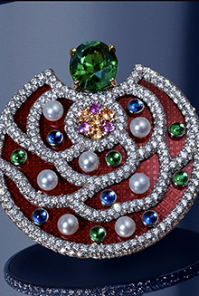

Biographie
Gabrielle Bonheur « Coco » Chanel voit le jour à Saumur en 1883. Orpheline à 12 ans, elle grandit dans un orphelinat avec ses sœurs. Elle apprend la couture auprès de sa tante à l’âge de 18 ans et débute sa carrière en 1903 dans un atelier qui fabrique des trousseaux et layettes. Dès 1907, attirée par la scène, Coco Chanel chante dans les cafés à Vichy. Elle garde de cette époque son surnom, « Coco » car elle chantait « Qui qu’a vu coco sur le Trocadéro ? ». Elle y rencontrera son futur protecteur, Etienne Balsan, qui l’introduira dans la vie mondaine. Il lui présente Arthur « Boy » Capel, le grand amour de Coco Chanel.
Boy la convainc de se lancer dans la fabrication de chapeaux et, en 1910, il lui prête de quoi ouvrir un salon de modiste. Sa boutique est située au 31 rue Cambon et s’appelle alors « Chanel Modes ». Entre 1913 et 1915, ils ouvrent des boutiques à Deauville et Biarritz, villes d’exils pour la haute société pendant la guerre. Ses chapeaux simples et sophistiqués sont très appréciés. Dans sa boutique de Biarritz, Coco Chanel installe sa première véritable maison de couture où elle dessine ses premières créations. La pénurie de tissu due à la guerre amène la créatrice à se fournir en jersey, une matière réservée alors aux sous-vêtements, c’est un succès.

La pénurie de tissu due à la guerre amène la créatrice à se fournir en jersey, une matière réservée alors aux sous-vêtements, c’est un succès. Coco Chanel retranscrit sa volonté de modernité pour la femme dans ses créations en lui conférant une allure androgyne, à travers des robes droites et le pantalon jusqu’alors réservé aux hommes. Au sortir de la guerre, son entreprise est prospère et emploie environ 300 ouvrières. Son amant, Boy Capel décède en 1919. En 1921, Coco Chanel acquiert deux nouveaux immeubles rue Cambon, à côté du siège de la maison et devient la même année, la première créatrice à lancer son parfum, le célèbre N°5 de Chanel. En 1926, Coco Chanel dessine la fameuse petite robe noire, couleur alors réservée au deuil, inspirée par l’uniforme qu’elle portait étant jeune. Le modèle devient un classique de la maison de couture, et plus généralement, dans la mode. Coco Chanel est proche des artistes parisiens pendant l’entre-deux-guerres : elle dessine les costumes pour les pièces de Cocteau, est amie avec Marcel Proust, Toulouse-Lautrec et Auguste Renoir.
En 1932, Coco Chanel, fervente adepte de perles et bijoux en tout genre, devient la première créatrice à lancer une ligne de Haute Joaillerie. À l’annonce de la Seconde Guerre Mondiale, Coco Chanel ferme les portes de sa maison de couture pour se consacrer uniquement aux parfums. À la libération, Coco Chanel s’installe en Suisse au moment où le New Look de Christian Dior s’impose fortement. C’est seulement en 1954 qu’elle se décide à revenir à Paris pour reprendre ses activités ; elle a alors 71 ans. Gabrielle Chanel s’installe définitivement dans ses appartements de l’Hôtel Ritz, devenus aujourd’hui la Suite Coco Chanel. Elle crée des nouveaux modèles qui deviendront des classiques, comme le tailleur en tweed et les ballerines bicolores. Pendant les années 60 et la révolution Hippie, Coco Chanel se fait discrète, elle vit confinée entre ses appartements et sa maison de couture, travaillant avec acharnement. Coco Chanel décède en janvier 1971, à l’âge de 87 ans, alors qu’elle prépare une nouvelle collection, qui sera présentée à titre posthume.